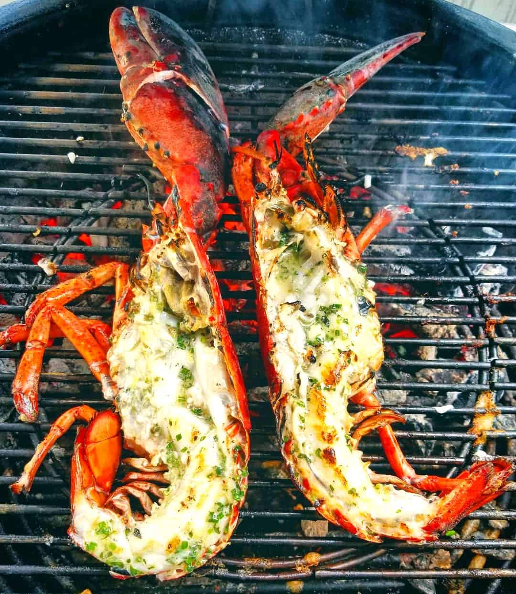

Odin Recipes

Grilled Lobsters
Lobster tail is kinda expensive, and therefore it seems pretty fancy. But it's actually incredibly
easy to make. This recipe comes together in under 30 minutes and is the perfect dinner to make for
a special occasion.
Ingredients
- Melted Butter
- Lemon Juice
- Garlic
- Lobster Tails
Steps
- Preheat a grill or pan over medium heat. In a small bowl, whisk together melted butter,
lemon juice, parsley, garlic and salt.
- Cut top of lobster shell from meaty portion of tail. Using a knife, cut halfway through
meat down the center, without cutting all way through..
- Brush all over with oil and season with salt and pepper. Grill fresh side down until lightly
charred, about 6 minutes. Flip lobster and dollop a spoonful of butter mixture on flesh side.
References
Grilled lobsters recipe
Return to main page